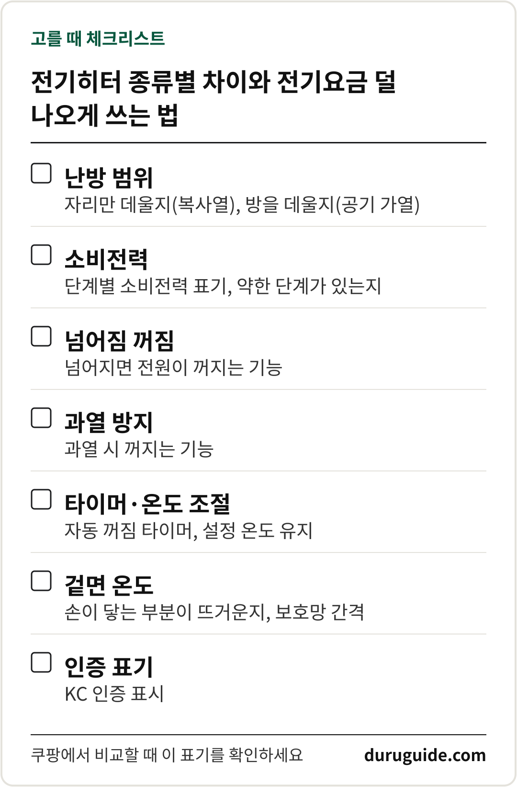

전기히터 종류별 차이와 전기요금 덜 나오게 쓰는 법
안 사도 되는 경우
문틈과 창문 틈을 막아 지금 쓰는 난방으로도 지낼 만해졌다면 새 히터를 사지 않아도 돼요.
이런 상황이죠
책상 밑이 시리거나 잠깐 쓰는 방이 추워서 전기히터를 하나 사려는데, 할로겐, 카본, 세라믹, 라디에이터처럼 이름이 다 달라요. 무엇보다 전기요금 고지서가 걱정돼서 선뜻 고르기 어렵지요.
왜 생기나
전기히터는 크게 두 갈래예요.
- 복사열 방식(할로겐·석영관·카본) — 발열체가 빛과 함께 열을 내서 앞에 있는 사람과 물건을 바로 데워요. 켜자마자 따뜻하지만 정면에서 벗어나면 덜 따뜻해요. 발 밑이나 책상 앞처럼 좁은 자리에 맞아요.
- 공기를 데우는 방식(세라믹 팬히터·컨벡터·라디에이터) — 주변 공기를 데워 방 온도를 올려요. 팬히터는 바람으로 빨리, 라디에이터와 컨벡터는 바람 없이 천천히 데워요.
전기요금은 방식보다 소비전력과 켜 두는 시간에 따라 정해져요. 같은 소비전력이면 오래 켤수록 더 나와요. 주택용 전기는 사용량이 많아지면 단가가 오르는 구간이 있어서, 겨울에 여러 기기를 오래 쓰면 생각보다 많이 나올 수 있어요.
사기 전에 먼저 해볼 것
- 사람이 있는 곳만 데워요. 방 전체를 데우기보다 앉는 자리 가까이에 두고 짧게 쓰는 게 전기를 덜 써요.
- 외풍을 줄여요. 문틈과 창문 틈을 막으면 같은 시간에 더 따뜻해요.
- 타이머를 써요. 켜 두고 잊지 않게 시간을 정해 두세요.
- 소비전력 표기를 확인해요. 지금 쓰는 기기의 소비전력과 하루 사용 시간을 곱해 보면 대략의 사용량을 알 수 있어요.
고를 때 체크리스트
| 확인 항목 | 보는 기준 |
|---|---|
| 난방 범위 | 자리만 데울지(복사열), 방을 데울지(공기 가열) |
| 소비전력 | 단계별 소비전력 표기, 약한 단계가 있는지 |
| 넘어짐 꺼짐 | 넘어지면 전원이 꺼지는 기능 |
| 과열 방지 | 과열 시 꺼지는 기능 |
| 타이머·온도 조절 | 자동 꺼짐 타이머, 설정 온도 유지 |
| 겉면 온도 | 손이 닿는 부분이 뜨거운지, 보호망 간격 |
| 인증 표기 | KC 인증 표시 |
이런 분께는 맞지 않아요
- 방 하나를 하루 종일 데워야 한다면 전기히터만으로는 전기요금 부담이 클 수 있어요.
- 아이가 있다면 발열체가 드러나는 복사열 방식은 손이 닿지 않는 곳에서만 쓰세요.
자리별로 고르면
- 책상 아래·발밑 — 작은 복사열 히터나 발 전용 히터가 잘 맞아요. 이불이나 담요가 닿지 않게 거리를 두세요.
- 잠깐 쓰는 작은방 — 세라믹 팬히터처럼 빨리 데우는 제품이 편해요.
- 오래 머무는 방 — 바람 없이 천천히 데우는 라디에이터·컨벡터가 조용한 편이에요.
전기히터는 벽 콘센트에 단독으로 꽂고, 커튼·이불·옷과 떨어뜨려 두세요. 젖은 빨래를 히터 위에 널어 말리지 마세요.
추천 제품 찾기
먼저 데울 범위(자리 또는 방)와 하루 사용 시간을 정하세요. 쿠팡에서는 난방 방식, 단계별 소비전력, 넘어짐 꺼짐, 과열 방지, 타이머 표기를 비교해 보시면 돼요. 현재 가격은 쿠팡에서 확인해 주세요.

쿠팡에서 전기히터 보기
위 표의 표기를 비교해 보세요.
현재 가격은 쿠팡에서 확인해 주세요.
이 포스팅은 쿠팡 파트너스 활동의 일환으로, 이에 따른 일정액의 수수료를 제공받습니다.